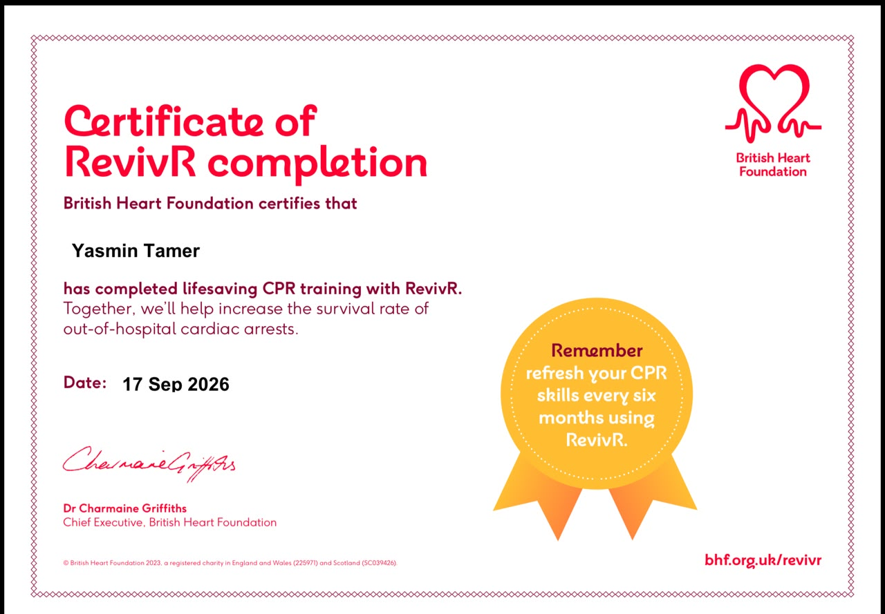

MY ACHIEVEMENTS
Learning.
Growing. Achieving.
Every learning experience is a step toward becoming the person I aspire to be. Here are some of my achievements and future goals.
EARNED CERTIFICATE
My Certifications

✓ Certificate Earned
CPR Certificate
Issued by British Heart Foundation
Training in cardiopulmonary resuscitation (CPR).
WHAT'S NEXT
My Future Learning Goals
I'm always looking for opportunities to expand my knowledge and develop new skills.
Artificial Intelligence
A future learning goal as I continue exploring technology.
PlannedLeadership
A future goal focused on leading teams and developing leadership skills.
Planned